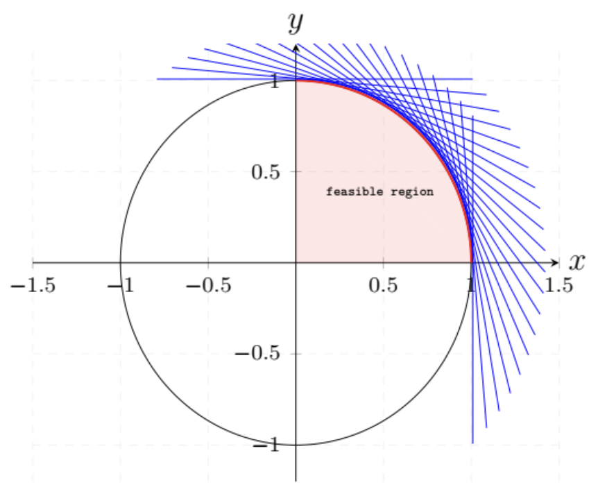

Chapter 2#
Exercise 2.1#
For each one of the following sets, determine whether it is a polyhedron.
(a) The set of all \((x, y)\in \mathcal{R}^2\) satisfying the constraints:
(b) The set of all \(x\in\mathcal{R}\) satisfying the constraint \(x^2 - 8x + 15 \leq 0\).
(c) The empty set.
Solution:
(a) The set equals \(\{ (x,y) | x \geq 0, y \geq 0, x^2 + y^2 \leq 1 \}\), which has the following image:

It is a set represented by infinite linear constraints, while a polyhedron is formed by finite linear constraints.
(b) The set is \(\{x\geq 3, x\leq 5\}\) and is a polyhedron.
(c) The empty set can be represented as \(\{x\geq 0, x< 0\}\) and is a polyhedron.
Note
A polyhedron is formed by finite linear constraints.
Exercise 2.2#
Let \(f:\mathcal{R}^n\rightarrow\mathcal{R}\) be a convex function and let \(c\) be some constant. Show that the set \(S = \{\bf{x} \in \mathcal{R}^n\mid f(\bf{x}) \leq c\}\) is convex.
Solution:
Assume two random element \(x_1\) and \(x_2\) in the set \(S\), therefore
For a parameter \(\theta\in [0, 1]\),
Thus,
Since \(f\) is a convex function,
And this leads to
Therefore, the set \(S\) is convex. \(\Box\)
Exercise 2.4#
We know that every linear programming problem can be converted to an equivalent problem in standard form. We also know that nonempty polyhedra in standard form have at least one extreme point. We are then tempted to conclude that every nonempty polyhedron has at least one extreme point. Explain what is wrong with this argument.
Solution:
Assume a nonempty polydron is a hyperplane \({\bf a'x}=b\), for any point \(x_0\) in it, we can find other two points \(x_1\), \(x_2\) that satisfies \(x_0 = \lambda x_1+(1-\lambda)x_2\), so there can not be an extreme point in this polyhedron.
Note
A hyperplane is a polyhedron, but it does has extreme points.
Exercise 2.5#
(ExtreIne points of isoInorphic polyhedra) A mapping \(f\) is called affine if it is of the form \(f(\bf x) = Ax + b\), where \(\bf A\) is a matrix and \(\bf b\) is a vector. Let \(P\) and \(Q\) be polyhedra in \(\mathcal{R}^n\) and \(\mathcal{R}^m\) , respectively. We say that \(P\) and \(Q\) are isomorphic if there exist affine mappings \(f: P\rightarrow Q\) and \(g: Q\rightarrow P\) such that \(g(f(\bf x) = x\) for all \(\mathbf{x} \in P\), and \(f(g(\bf y) = y\) for all \(\mathbf{y} \in Q.\) (Intuitively, isomorphic polyhedra have the same shape.)
(a) If \(P\) and \(Q\) are isomorphic, show that there exists a one-to-one correspondence between their extreme points. In particular, if \(f\) and \(g\) are as above, show that \(\bf x\) is an extreme point of \(P\) if and only if \(f(\bf x)\) is an extreme point of \(Q\).
(b) (Introducing slack variables leads to an isoInorphic polyhedron) Let \(P = \{\mathbf{x} \in \mathcal{R}^n \mid \bf Ax \geq b, x\geq 0\}\), where \(\bf A\) is a matrix of dimensions \(k\times n\). Let \(Q = \{\bf (x, z) \in \mathcal{R}^{n+k} \mid Ax - z = b, x \geq 0, z \geq 0\}\). Show that \(P\) and \(Q\) are isomorphic.
Solution:
(a) We first prove：if \(\bf x\) is the extreme point of \(P\), then it is also the extreme point of \(Q\).
According to the definition of extreme point and Theorem 2.3 in the book, \(\bf x\) is also a vertex of \(P\), then: there exists a vector \(\bf c\) such that \(\bf c'x<c'y\) for all \(\bf y\) satisfying \(\bf y\in P\) and \(\bf y\neq x\).
Since \(g(f(\bf x))=\bf x\),
Since \(g\) is an affine function, we assume \(g(\bf x)=Dx+d\), then
\(\bf Ax+b\), \(\bf Ay+b\) are the points in \(Q\). \(\bf c'D\) is a vector and \(\bf Ax+b \neq Ay+b\). By the definition of vertex, \(\bf Ax+b\) is the vertex of \(Q\). Thus it is also an extreme point of \(Q\).
In a similar way, we can prove: if \(\bf x\) is the extreme point of \(Q\), then it is also the extreme point of \(P\)。\(\Box\)
(b) By obtaining the formulas of \(f\) and \(g\), we can prove \(P\) and \(Q\) are isomorphic.
The formulas of \(f\) and \(g\) are below: